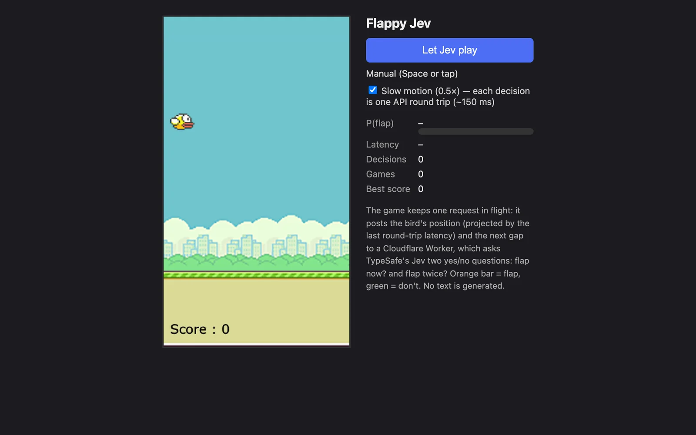

このUIがしていること
判断の中身を、結果（鳥の動き）と並べて、値として出し続けている。ゲームは、判断の速さと限界を体で分かるための見本になっている。
- 確率を棒と色で出す。羽ばたいたかどうかだけでなく、どれくらいの確率だったかが読める。
- 遅延を常に表示し、速度を落としていることを、チェックボックスの文言で断っている。判断の往復が約150msかかることを隠さず、設計に織り込んでいる（位置の先読みも、その1つ）。
- 「Let Jev play」と「Stop Jev」で、操作を任せる・取り戻すを、いつでも切り替えられる。手動の操作（スペースかタップ）も残っている。
- 失敗しても、ゲームがやり直されるだけである。誤った判断の代償が小さい場で、確率と遅延を観察できる。
キャプチャ
{kind=link}

（原寸の画像を開く）見る箇所「Let Jev play」のボタン、「Manual (Space or tap)」、「Slow motion (0.5×) — each decision is one API round trip (~150 ms)」のチェック、P(flap)の棒、Latency、Decisions、Games、Best score、下の説明文
入力から画面の変化まで
-
判断への入力
サイトの説明では、鳥の位置（直前の往復の遅延のぶんだけ先を見越した位置）と、次のすき間の位置。要求は常に1つだけ飛ばす。
-
Jevの判断
サイトの説明では、はい・いいえの問いを2つ尋ねる。「いま羽ばたくか」と「2回羽ばたくか」。文章は生成しない。
-
結果がUIをどう変えるか
P(flap)の棒（説明では、橙が羽ばたく、緑が羽ばたかない）、Latency、Decisions、Games、Best score、ゲーム内のScore。初期状態では、値は「–」と0。調査監査の記録では、プレイ中にP(flap)が低い値と約0.96のあいだで変わり、得点は上がって、失敗すると戻る。操作を任せているあいだは、ボタンが「Stop Jev」になる。
- 判断型の見立て
- Noul推定
- サイトの説明が、はい・いいえの問いを2つ（いま羽ばたくか、2回羽ばたくか）尋ねると述べていることからの見立て。画面には質問型の名前が出ていない。
Jevとの適合
少ない状態から、はい・いいえを高い頻度で返す使い方で、文章の生成を必要としない。一方で、サイト自身の注記が、往復の遅延がゲームの速さに対して無視できないことを示している。速い判断であっても、フレーム単位の制御には、速度を落とすなどの工夫が要る、という実例である。
確認範囲と未確認事項
調査監査の評価はC（索引向け）。実装は実在し、判断の見せ方は丁寧だが、Jevにゲームを操作させる型は、既存のテトリス、Doom、Icy Towerなどの事例と重なる。この事例は、その比較対象として置く。掲載した画面は公開サイトを開いた直後の状態で、Jevに操作を任せる前のもの。プレイ中の値は調査監査の記録による。サイト自身が、判断の往復の遅延のために速度を0.5倍に落としていると断っており、これは実験であって、安定したリアルタイム制御の証拠ではない。
- 確認済み2026-09-21に取得した公開サイトの初期画面（ボタン、手動操作の案内、速度を落とす設定と注記、P(flap)・Latency・Decisions・Games・Best scoreの欄、説明文）
- 未検証Jevに操作を任せたあとの画面（プレイ中の値は調査監査の記録による）、確率と実際の動作の対応、遅延の実測、リポジトリのコード（監査はJevの呼び出しを確認したと記録しているが、このサイトの作業では開いていない）、投稿の動画
- 推定扱い質問型（Noulと見立て）。サイトの説明が、はい・いいえの問いを2つ尋ねると述べていることからの見立てで、画面には質問型の名前が出ていない
- 引用公開サイト画面を2026-09-21に必要範囲で取得。権利は作者に帰属する